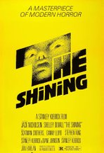
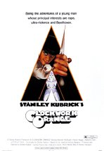
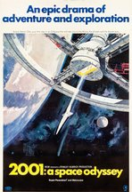
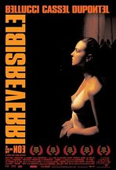
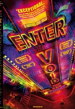
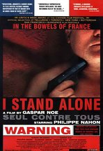
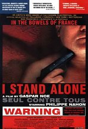

▼BlackHole▼
☼
Stanley Kubrick
Stanley Kubrick nació en Manhattan, Nueva York, a Sadie Gertrude (Perveler) y Jacob Leonard Kubrick, un médico. Su familia eran inmigrantes judíos (de Austria, Rumania y Rusia). Stanley era considerado inteligente, a pesar de las malas calificaciones en la escuela. Esperando que un cambio de escenario produjera un mejor rendimiento académico, el padre de Kubrick lo envió en 1940 a Pasadena, California, para quedarse con su tío, Martin Perveler. Volviendo al Bronx en 1941 para su último año de escuela secundaria, parecía haber poco cambio en su actitud o en sus resultados. Con la esperanza de encontrar algo que interesara a su hijo, Jack introdujo a Stanley al ajedrez, con el resultado deseado. Kubrick tomó el juego con pasión, y rápidamente se convirtió en un jugador experto. El ajedrez se convertiría en un dispositivo importante para Kubrick en años posteriores, a menudo como una herramienta para tratar con actores recalcitrantes, pero también como un motivo artístico en sus películas.
  Gaspar Noé
Gaspar Noé nació el 27 de diciembre de 1963 en Buenos Aires, Argentina. Es director y productor, conocido por Irreversible (2002), Enter the Void (2009) y Love (2015). No hay una línea entre el arte y la pornografía. Puedes hacer arte de cualquier cosa. Usted puede hacer una película experimental con esa vela o con esta grabadora. Usted puede hacer una obra de arte con un gato bebiendo leche. Usted puede hacer una obra de arte con personas que tienen relaciones sexuales. No hay línea. Cualquier cosa que se dispara o se reproduce de una manera inusual se considera artística o experimental. [On Love (2015)] Sólo quería retratar la pasión sexual tanto como sea posible, porque en la vida real es muy común, pero no lo ves correctamente retratado en la pantalla. La última película en la que pensé que el amor estaba realmente presentado estaba en La vida de Adèle (2013). Porque para ellos es un campo de batalla lleno de alegrías y dolor. Eso todo lo que hace que el proceso de encontrar el amor como una adicción a algún tipo de extraño químico que su cerebro está liberando, y te adicto a la serotonina y la dopamina, las endorfinas. [2015]
  
